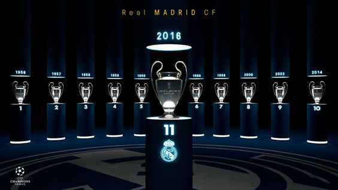

From the late 1990s Real Madrid spent enormous sums on luring some of the world’s most famous foreign players to the club, where they are known as galácticos (“superstars”). Those players were often the most expensive (by transfer fee) footballers in the world and included such stars as David Beckham, Luis Figo, Ronaldo, Zinedine Zidane, Kaká, Cristiano Ronaldo, and James Rodriguez. Sergio Ramos and Iker Casillas are other notable players of this era.
Cristiano Ronaldo (born February 5, 1985, Funchal, Madeira, Portugal) is a Portuguese football (soccer) forward who is one of the greatest players of his generation. The winner of five Ballon d’Or awards, he is among the sport’s top goal scorers.
